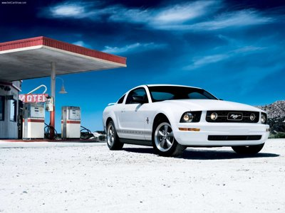

|  | Standardowe wyposażenie Mustanga z 2005 r. Obejmuje elektrycznie sterowane szyby, podwójne lusterka, elektryczne zamki drzwi z pilotem zdalnego sterowania, przednie poduszki powietrzne, radio AM / FM z odtwarzaczem CD, 16-calowe malowane aluminiowe koła i większe tarcze hamulcowe niż poprzednia generacja Mustang z podwójnymi tłokowymi zaciskami z przodu. Pakiet Pony dla V6 Mustang stał się dostępny od 2006 roku. Ta opcja obejmuje ulepszone zawieszenie pochodzące z Mustang GT, 17-calowe koła z szerszymi oponami |